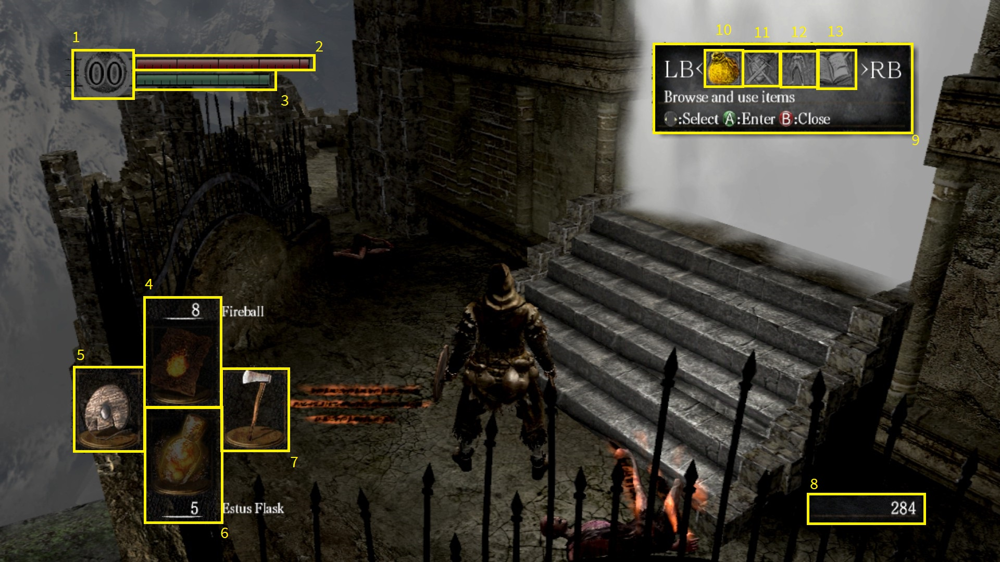
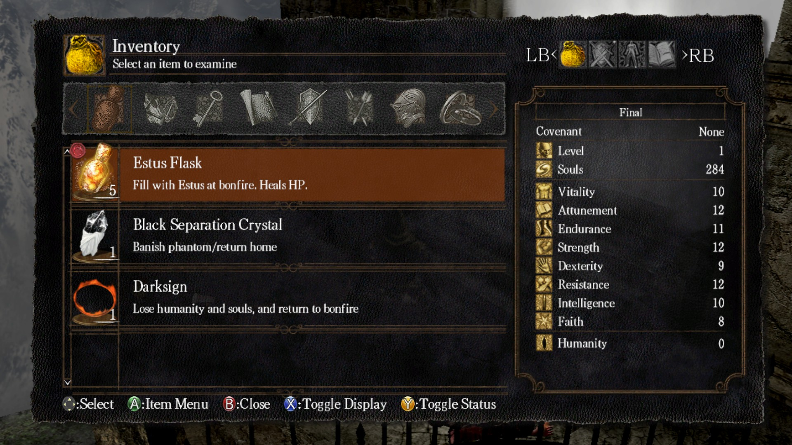

The Game's User Interface
So right off the bat, this game has a few things going on, there's at least eight different icons on screen and many of them do not have any sort of an indication of what they are or what they do. However, intuitively we can tell that the red bar is our health and after a bit of running around and playing with the controls the green bar is our stamina. I'm going to go over each and every icon here quickly to help you understand what we're dealing with:

- This is your humanity. You are currently undead and if you're connected to the internet cannot interact with other players. You can get humanity by using the “Humanity” item and then resting at a bonfire to “Reverse Hallowing.”
- This is your health, when it goes to 0 you die and return to the last bonfire you rested at.
- This is your stamina, nearly everything you do in game affects it by using it or slowly regenerating it.
- This is the magic you have attuned. Many starting classes do not have any in this slot yet.
- This is your left-handed item.
- This is your items you have equipped. Most classes start with nothing.
- This is your right-handed weapon: generally your weapon.
- This is the amount of souls you have collected. Dying drops your souls on the ground nearby where you died. This is your currency for practically everything in the game.
- This is the pause menu. Note: THIS DOES NOT PAUSE THE GAME!
- This is your inventory.
- This is your equipment.
- This is your character's status menu.
- These are the game's options and where you go to quit.

Going further into the menu: particularly your inventory panel (10) yields a list of items that you have collected that are organized by their type.